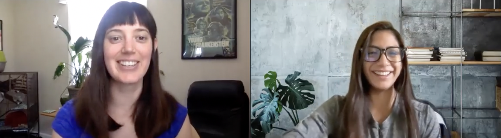
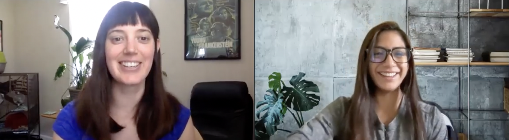

Get to Know Me
Case Studies

The Dreaming Zebra was in need of redesigning their now 11 year old website. We had the opportunity to redesign their website. We uncovered that besides needing an aesthetic redesign, the information architecture was confusing and high rate of site abandonment due to not understanding the goal of the organization, how to contribute to it, or how to request donations.

 

We interviewed and surveyed various people who had roles similar to our personas such as teachers, non-profit staff, and people who donate to non-profit organizations.
Many of them stressed both how fragile the state of art education is, and how important to young children's education it is. Two of our interviewees were teachers or teachers assistants. They expressed the impacts the pandemic had brought to art education and being able to provide art supplies to students while learning virtually. The other pain point was the budget limitations school districts have for art supplies. When there are budget cuts, art is always impacted.
In the research, we shared a Google Form survey on social media to obtain additional insight from users that have interacted with non-profit organizations.


We gained some important insight from our surveys. The following questions indicated the importance of the following capabilities:
The affitnity diagram helped us categorize the information gathered in our interviews and survey. It was very important to understand the frustrations to build our problem statement and our user persona.

We developed the following user insight based on our interviews and survey findings:
“Elementary school teachers who work for school districts with limited budgets need to be able to request art/music supplies because art instruction helps children with the development of motor skills, language skills, social skills, decision-making, risk-taking, and innovation.”
And this is how Jennifer Richards came to life!
We defined Jenny’s main problem to be that tired, underappreciated teachers who work for school districts with limited budgets and are looking to benefit from the Dreaming Zebra Foundation need to easily find what support they can get from the organization, and be able to request a donation so that they can help teach art class to children.
The heuristic evaluation uncovered multiple existing issues with the current website that also aligned with our defined problem.
At first glance, we notice information architecture being a main issue. The busy home page makes it difficult for users to locate where to Donate/Volunteer as well as identifying what the non-profit purpose is all about. Users do not have the option to use a Search functionality, which can lead to frustration and site abandonment.
To improve the user friendliness, we focused on the card sorting activity. This activity helped us consolidate the main navigation and ensure topics were placed appropriately where they made sense.
We focused on emphasizing the user needs and making it simple for a user to request supplies and offer help to the organization.
The sitemap allowed us to visualize the future state navigation.
As part of ideation, we came up with a style tile and eventually a style guide for the development of our high fidelity prototype.
We were able to develop our first iteration of low fidelity web and mobile wireframes based on the gathered findings and our new future state navigation system.
The home page displays the option to Make a Donation, Volunteer, and Request Supplies.
A Search functionality was added to make it easier for the user to locate their specific needs.


Usability testing mostly uncovered issues related to the visual content. We thank the card sorting and site map exercise for the navigation success. The three main user tasks were easy to locate and no major issues were identified.
Iterations consisted of adding padding and spacing between the images and making sure the button sizes were larger in size